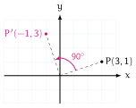

Apartado 11.2
Movimientos en el plano
Traslaciones
Giros
Cuando el centro es el origen de coordenadas, algunos giros se calculan de forma muy sencilla:

11.2.1
Gira el punto \(P(2, 5)\) con centro en el origen \(90^\circ\), \(180^\circ\) y \(270^\circ\).
Simetrías
Una figura tiene eje de simetría si al aplicarle la simetría respecto a ese eje queda igual. Por ejemplo, un cuadrado tiene 4 ejes de simetría y un triángulo equilátero tiene 3.
11.2.2
Halla el simétrico de \(Q(-4, 3)\) respecto al eje \(X\), al eje \(Y\) y al origen.